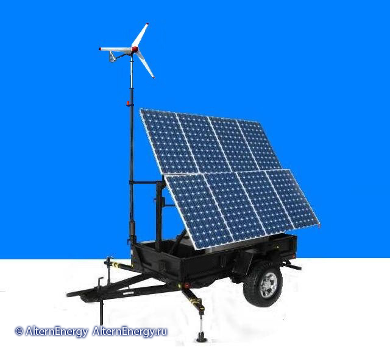

Пример мобильной гибридной системы автономного энергоснабжения

| Технические характеристики | |
| Параметр | Значение |
| Номинал | 4,5кВт.(синус, 1Ф, 220В,50Гц) |
| пик | 5,2кВт - 5минут |
| СБ | 8х170Ват (24В) и того 1360Ват |
| ДГУ | YAMAHA 2кВт (220-24В) автозапуск. |
| Бак | 15л. |
| Контроллер | SunWize 24В-60А |
| АКБ | DJM 150А/ч х 8шт |

Мобильная Гибридная система энергоснабжения - внешний вид
По выбору: 1 или 2 ВЭУ Аир-Икс 400Ват(24В) - две мачты(опция).
АКБ - CSB (DJM) емкость 600А/ч (150А/ч х 8шт) Автономия от одних АКБ при нагрузке 4500Ват непрерывно -2,3 часа.Без генерации СБ ,ДГУ и ВЭУ.
Прицеп Курганский (идет для УАЗов) резина R15 (на этом стоит от LC Prado R17)
- Мачта с проблесковым маяком (светодиодный с отдачей 180Ват, цвет - красный) ,алюминиевая, покрытая краской
- тент синий
- кабель подкл. нагрузки 55 метров(2х жильный)
- 2 прожектора светодиодных (аналог 100 ке)
Возможность комплектации непосредственно под Вашу задачу!
Доставка за наш счет.
Мобильные ветро-солнечные гибридные электростанции мощностью от 3 до 12кВт с резервным ДГУ (опция). Мобильные ветро-солнечные электростанции на автоприцепах – являются гибридными системами инверторного накопительного типа – получающими энергию от восполнимых природных источников (солнце, ветер) с аккумуляцией энергии в батарее аккумуляторов для дальнейшего использования, в данных станциях ДГУ с автозапуском используется в качестве резервного источника.
Cтанции предназначены для обеспечения электроэнергией нагрузок с питающим напряжением ~220В,50Гц переменного тока и 12-24, 48В (в зависимости от модели) постоянного тока в полевых условиях - в дали от основных источников электроэнергии, либо в качестве резервно-аварийного, вспомогательного источника.
Применяются как быстроразворачиваемый - мобильный комплекс электропитания для аварийных служб, полевых госпиталей, армейских подразделений, геологических партий, МЧС, строителей и дорожных служб, а так же турбаз, кемпингов, фермерских хозяйств и других объектов. Для обеспечения питания электроинструмента, средств связи и телекоммуникации, осветительных приборов, маркерных и заградительных огней, ПК, зарядных устройств, насосов, охранно-пожарных систем и другого электрооборудования с питающим напряжением переменного тока - 220В и постоянного 12-24,48В.
ПРЕИМУЩЕСТВА
Большой срок службы, практически не требуют обслуживания, работают полностью в автономном режиме, экологически чисты. Мобильность и минимальное время для разворачивания, подключения системы и начала работы. Наличие встроенного ДГУ (опция) позволяет не зависеть от погодных и других природных и климатических условий (продолжительное отсутствие достаточного количества ветра, солнца), при этом расход ГСМ будет минимальным.
При достаточной солнечной инсоляции, ветре –станции работают полностью в автономном режиме без запуска ДГУ с получением энергии только от восполнимых источников энергии. При полностью заряженном АКБ и отсутствии генерации от ВЭУ,СБ, ДГУ - обеспечивается автономная работа только от АКБ в течение нескольких часов.
Наличие в составе станции АВР (опционально) – данные системы могут эксплуатироваться в качестве ИБП и могут работать совместно с несколькими источниками электропитания объекта в качестве резервно-аварийного или вспомогательного источника. Опционально станции комплектуются телескопическими мачтами с прожекторами для освещения, выносными маркерными-заградительными огнями, светодиодными сверхяркими прожекторами, водяными электронасосами, электроинструментом.
Если вы желаете заказать данное оборудование или у вас возникли вопросы, обращайтесь: "ALTERNENERGY" Тел. +7(918)459-07-08, E-mail: alternenergy@pochta.ru
ТЕХНИЧЕСКИЕ ХАРАКТЕРИСТИКИ И МОЩНОСТИ БАЗОВЫХ СТАНЦИЙ
-
| МОДЕЛЬ | МС3-12 | МС4-24 | МС6-24 | МС12-24 |
| Номинальная выходная мощность | 3кВт | 4кВт | 6кВт | 12кВт |
| Пиковая мощность | 3,5кВт | 4,7кВт | 7кВт | 14кВт |
| Пиковая мощность | 3,5кВт | 4,7кВт | 7кВт | 14кВт |
| Форма вых. напряжения | синус | синус | синус | синус |
| Выходное напряжение (+- 0,05%) | ~ 220/50Гц | ~ 220/50Гц | ~ 220/50Гц | ~ 220/50Гц |
| Гармонические искажения | <5% | <5% | <3,5% | <3,5% |
| Количество фаз | 1Ф | 1Ф(3Ф) | 1Ф(3Ф) | 1Ф(3Ф) |
| Выходное напряжение пост.тока | 12В(24) | 24В(12-48) | 24В(48) | 24В(48) |
| Зарядный ток макс | 30А | 40А | 60А | 70А |
| Мощность номинальная ФЭМ | 1,4-1,7кВт | 1,4-1,7кВт | 1,7-2кВт | 2-2,7кВт |
| Тип солнечной батареи | монокристалл | монокристалл | монокристалл | монокристалл |
| Конструкция ФЭМ (складная) | 2 секции | 4 секции | 4-6 секций | 6 секций |
| Количество ФЭМ (шт.) | 6-8 | 6-8 | 8-10 | 10-12 |
| Регулировка угла наклона ФЭМ | 25-180Град | 25-180Град | 25-180Град | 25-180Град |
| Генерация ФЭМ (кВтч-в день) | 6-8 | 6-8 | 8-12 | 12-14 |
| Емкость АКБ | 600-800Ач | 800-1000Ач | 1000-1200Ач | 1000-1200Ач |
| Тип АКБ (тяговые не обслуживаемые) | AGM | AGM-GEL | AGM-GEL | AGM-GEL |
| Напряжение АКБ | 12В | 24В(12-48) | 24В(48) | 24В(48) |
| Тип заряда | MPPT-шим | MPPT-шим | MPPT-шим | MPPT |
| Отдача АКБ (кВтч) | 14-19кВтчас | 19-26кВтчас | 26-27кВтчас | 26-27кВтчас |
| Температурная компенсация (V/K) | 30-60C | -30-60C | -30-60C | -30-60C |
| Управление выходом пост.тока | Таймер-освещ | Таймер-освещ | Таймер-освещ | Таймер-освещ |
| Управление системой | М-контроллер | М-контроллер | М-контроллер | М-контроллер |
| Возм. параллельной работы с сетью | опция | опция | опция | опция |
| Выход RS232 для ПК мониторинга | опция | есть | есть | есть |
| Счетчик кВтчас | есть | есть | есть | есть |
| Дистанционное управление | опция | опция | опция | опция |
| Номинальная мощность ВЭУ (Ватт) | 400-600 | 400-800 | 800-900 | 800-1000 |
| Тип складной мачты (высота) | 3 секции (6м) | 3 секции (7м) | 3 секции (8м) | 3секции (8м) |
| Тип маркера мачты - проблесковый | LED- красный | LED-красный | LED-красный | LED-красный |
| Тип топлива для рез. генератора | Диз. бензин | Диз.бензин | Диз.бензин | Диз.бензин |
| Индикация режимов работы | LCD | LCD | LCD | LCD |
| Номинальная мощность ДГУ | 1,2кВт | 2кВт | 2-3кВт | 3-5кВт |
| Запуск ДГУ | Ручной-авто | Ручной-авто | Ручной-авто | Ручной-авто |
| Тепло-шумо изоляция ДГУ | есть | есть | есть | есть |
| Подогрев топливного бака ДГУ | опция | опция | опция | опция |
| Электронная защита | полносистемная | полносистемная | полносистемная | полносистемная |
| АВР (авт. включения резерва) | опция | опция | опция | опция |
| Зарядное устройство от сети 220В | опция | опция | опция | опция |
| Выносные прожекторы LED(к-во) | 2-4 | 2-6 | 4-6 | 4-6 |
| Тип прицепа (легковой) к-во осей | 1-R13 | 1-2 –R13 | 2- R14 | 2-R14 |
| Количество выдвижных опор | 2-4 | 2-4 | 4 | 4 |
| Класс защиты станции по IP | 54-67 | 54-67 | 67 | 67 |
| Рабочая температура эксплуатации | -35+55С | -35+55С | -35+55С | -35+55С |
| Ветровая нагрузка (макс) | 40м.сек | 35м.сек | 30м.сек | 30м.сек |
| Анемометр с ЖК дисплеем | опция | опция | опция | опция |
| Срок службы не менее лет | 25 | 25 | 25 | 25 |
По заказу возможен заказ станции мощностью до 15-20кВт, установка резервного генератора работающего на газе. Комплектация дополнительным оборудованием по ТЗ заказчика. Маркерными огнями (линейка на гибком кабеле) любой длины, дополнительными прожекторами и т.д., электроинструментом, насосами и т.д.